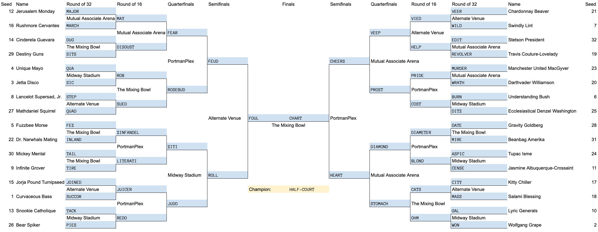

The puzzle consists of a 32-player tournament bracket, and an accompanying list of images numbered from 1 to 32. The images are representations of the names of 32 real people who have appeared in the Name of the Year bracket since 2014. What is the Name of the Year bracket, you ask? Founded in 1983 by Stefan Fatsis and a few others, the Name of the Year's mission is "to discover, verify, nominate, elect, and disseminate great names." The names must be real names, but they can be great for any number of reasons—humor, incongruity, shock value, or just from the way the name rolls off the tongue.
NotY's internet presence is, unfortunately, a little bit spotty. It spent a few years hopping from blog to blog after nameoftheyear.com was bought out, and never really found a permanent home anywhere (at one point disappearing from view with the demise of Deadspin), and nowadays its only active presence is its Twitter account. But you can still find individual year's brackets by Google image searching for the year + "name of the year bracket":
2014 2015 2016 2017 2018 2019 2020
We definitely wanted solvers to spend time combing through the brackets and cackling at the amazing names therein — that's what we spent most of our constructing time on! But to help you out, the names are sorted by year (earliest first), and within each year, the names appear in the same order they appear on the corresponding year's bracket image (top left to bottom left, then top right to bottom right). The full list of name identifications is as follows:
| # | Name | Year |
|---|---|---|
| 1 | Curvaceous Bass | 2014 |
| 2 | Wolfgang Grape | 2014 |
| 3 | Jetta Disco | 2014 |
| 4 | Unique Mayo | 2014 |
| 5 | Fuzzbee Morse | 2014 |
| 6 | Understanding Bush | 2015 |
| 7 | Swindly Lint | 2015 |
| 8 | Lancelot Supersad, Jr. | 2015 |
| 9 | Infinite Grover | 2015 |
| 10 | Lyric Generals | 2015 |
| 11 | Jasmine Albuquerque-Crossaint [sic]* | 2016 |
| 12 | Jerusalem Monday | 2016 |
| 13 | Snookie Catholique | 2016 |
| 14 | Cinderela Guevara | 2016 |
| 15 | Jorja Pound Turnipseed | 2016 |
| 16 | Rushmore Cervantes | 2017 |
| 17 | Kitty Chiller | 2017 |
| 18 | Salami Blessing | 2018 |
| 19 | Travis Couture-Lovelady | 2018 |
| 20 | Darthvader Williamson | 2018 |
| 21 | Chardonnay Beaver | 2018 |
| 22 | Dr. Narwhals Mating | 2018 |
| 23 | Manchester United MacGyver | 2019 |
| 24 | Tupac Isme | 2019 |
| 25 | Ecclesiastical Denzel Washington | 2019 |
| 26 | Bear Spiker | 2019 |
| 27 | Mathdaniel Squirrel | 2020 |
| 28 | Gravity Goldberg | 2020 |
| 29 | Destiny Guns | 2020 |
| 30 | Mickey Mental | 2020 |
| 31 | Beanbag Amerika | 2020 |
| 32 | Stetson President | 2020 |
* Her name is actually spelled Jasmine Albuquerque-Croissant, but the 2016 NotY bracket spells it "Crossaint", so that's what we're going with. However, unlike some of the other spelling quirks (Cinderela and Snookie), the solution to the puzzle is unaffected by the spelling of the last few letters of her name.
By and large, the image identifications are quite evident once you find the right name, but for the record, the Morse code in image 5 spells out BEE, and the weapons in image 29 are from the video game Destiny. People or fictional characters with relevant names appearing in the pictures are: chef Wolfgang Puck (#2), Hank Azaria as Lancelot from Spamalot (#8), Grover from Sesame Street (#9), Jasmine from Aladdin (#11), Snooki from Jersey Shore (#13), revolutionary Che Guevara (#14), actress Jorja Fox (#15), writer Miguel de Cervantes (#16), rock star Travis Barker (#19), NBA star Zion Williamson (#20), Richard Dean Anderson as MacGyver (#23), rapper Tupac Shakur (#24), actor Denzel Washington (#25), actor Daniel Radcliffe (#27), actress/host Whoopi Goldberg (#28), Mickey Mouse (#30), and President Joe Biden (#32).
Once the names have been identified, the next step is to put them into the tournament bracket. Each "seed" number in the bracket refers to the corresponding image number, and then the list of numbers next to the seed should be used to index into the name. In each case, indexing will spell out an English word.
The next step is to "play out" the tournament using these 32 words. Each matchup is allocated to one of five made-up venues, and each venue name hints at the kind of wordplay that occurs there. All five wordplay games take two words and produce a third word, whose length is given in blanks in the bracket:
The full bracket is given below. The puzzle answer is the tournament "champion": HALF-COURT.
Most of the wordplay is done by purely mechanical manipulations, but here's an explanation of the matchups in Mutual Associate Arena: